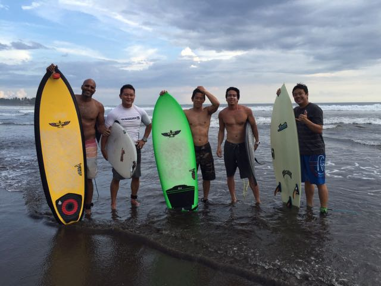

At SurfboardRatings.com, our goal is to provide a platform in which current and prospective surfers can share their experiences as they travel around the world, and learn from others' journeys.
As surfers ourselves, we understand that one of the greatest joys in this fantastic sport and pasttime is the exploration of new surf spots, and the opportunity to experience and learn from
new cultures. Personally, some of our best surfing experiences have occurred as we travelled to such countries as Indonesia, Costa Rica, Nicaragua, and Ecuador. In these journeys,
we have not only had the opportunity to find awesome and uncrowded waves, but we have also met some wonderful locals and expats, found and enjoyed new cuisines,
and traversed some incredibly scenic areas. However, we have also experienced the other end of the spectrum, such as going to crowded and dirty breaks, and staying in towns that were not a good match
with our wants and needs.

With so many different variables impacting a traveller's experience, it is our belief that there is no better source of information about a surfing destination than the countless individuals that are experiencing these areas first-hand. Through your continued input and support, we aim to arm us and our fellow surfers with the information needed to make the best informed decisions as we plan our new adventures.